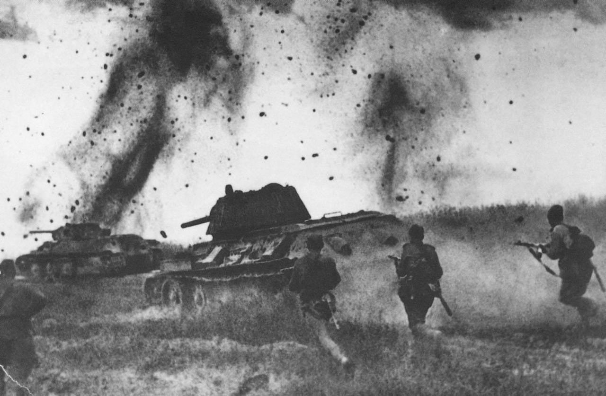
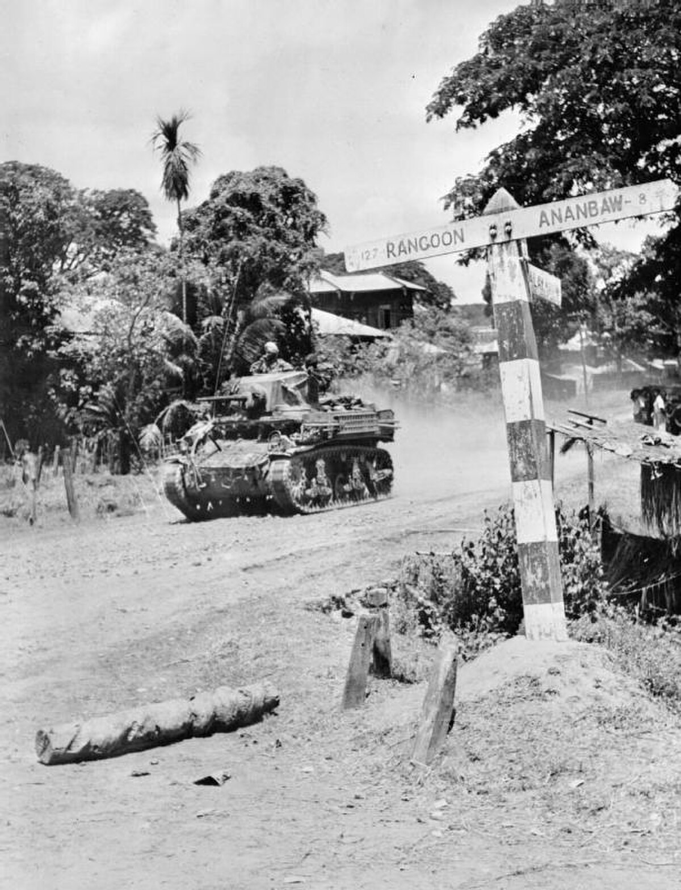
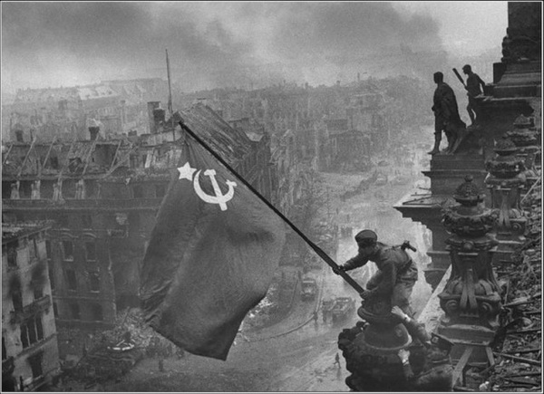
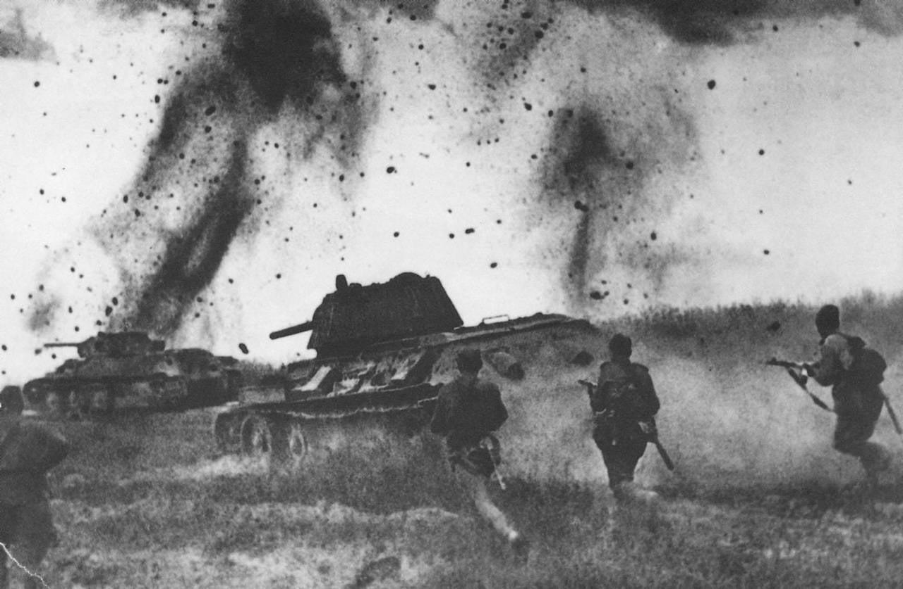
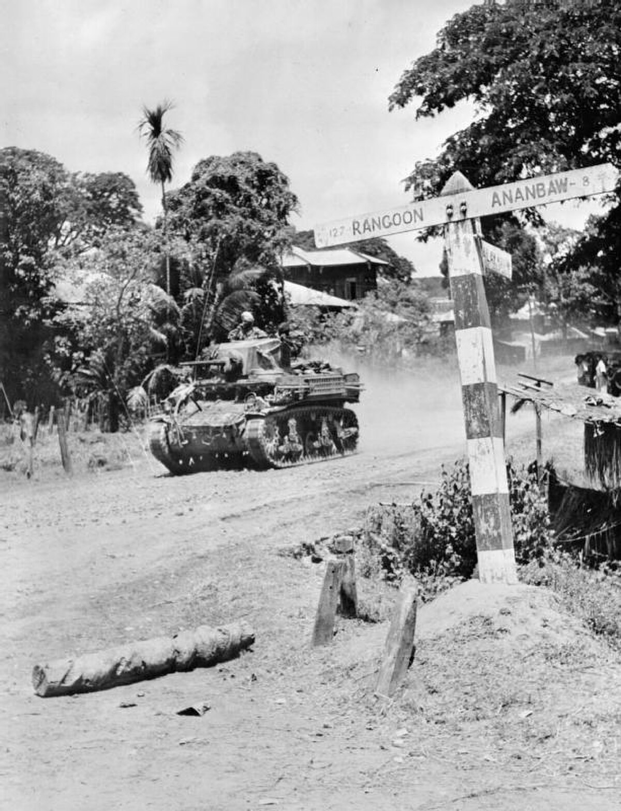
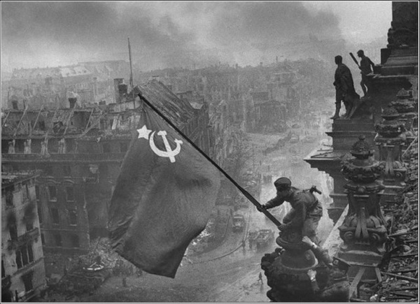

Hearts of Iron IV
Do you want to be a military dictator or a bastion of democracy?
download- Diplomacy
- Warfare
- Alliances
- Industry
- Strategy
- Research
- Production
- Politics
- Logistics
- Trade
- Ideologies
- Technology
- Economy
- Operations
- Naval Warfare
What you can expect from us:
We focus on delivering clear strategic insights, historical context, and detailed gameplay guidance. By prioritizing accessibility, we ensure players of all skill levels can immerse themselves fully in every campaign.
- Nation Management: Political maneuvering, economic stability, and ideological direction.
- Military Strategy: Frontline tactics, resource allocation, and technological advancements.
- Diplomatic & Cooperative Play: Forging alliances, trade deals, and joint operations with other players.
With years of experience analyzing strategies, understanding historical intricacies, and exploring diverse playstyles, we bring you a comprehensive guide to mastering Hearts of Iron IV.
Our goal is to help you craft unforgettable stories on the global stage.
screenshots from the game
Historical inspirations
 





Player Reviews
Venenum
" "Hearts of Iron IV" offers an incredibly deep strategic sandbox set against the backdrop of World War II. Every decision—be it aligning with powerful factions or forging a new ideological path—feels meaningful. I found myself constantly adjusting my production lines, researching cutting-edge tech, and carefully planning invasions. It’s a grand strategy experience that rewards patience and foresight, leaving me eager to start another campaign the moment one ends."
Kraken
"HOI4 transcends traditional RTS boundaries. The complexity of managing diplomatic relations, trade agreements, and industrial growth can be daunting at first, but it quickly becomes an addictive puzzle. Balancing political pressures and the demands of war production, I never felt like there was a “simple” path. It's a masterpiece for strategy enthusiasts who love to experiment with alternative histories and geopolitical maneuvering."

Partizan
" If you’ve ever wanted to rewrite history, "Hearts of Iron IV" is your blank canvas. Choosing to turn a minor nation into a global superpower or keeping a major faction afloat under heavy sanctions and invasions is exhilarating. The wealth of mods and active community only enriches the experience. It’s not just a game; it’s an evolving platform for storytelling and strategic mastery."
Key Features
Historical Accuracy & Flexibility
Relive or alter major global conflicts with detailed nation-specific focus trees that let you shape the fate of your chosen country.
Deep Tech & Research Trees
Stay ahead in the arms race by investing in new equipment, doctrines, and technologies that can change the tide of war.
Immersive Multiplayer
Join or challenge other strategists online. Form alliances, make enemies, and orchestrate complex global strategies in real-time.
Robust Modding Support
Expand the game’s universe with community-made content. Alternate timelines, new units, and total conversions keep gameplay fresh.